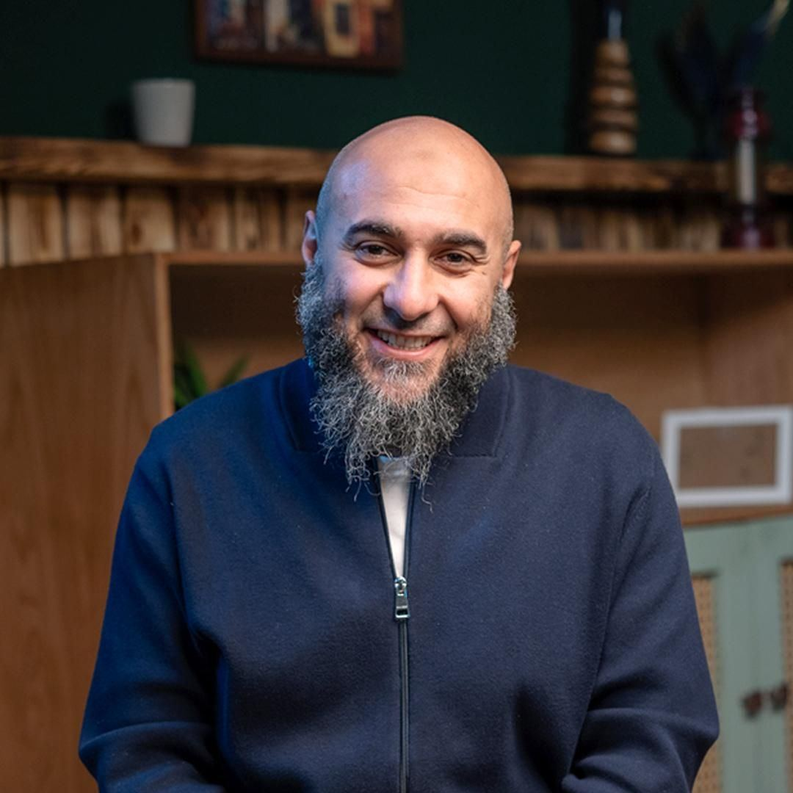
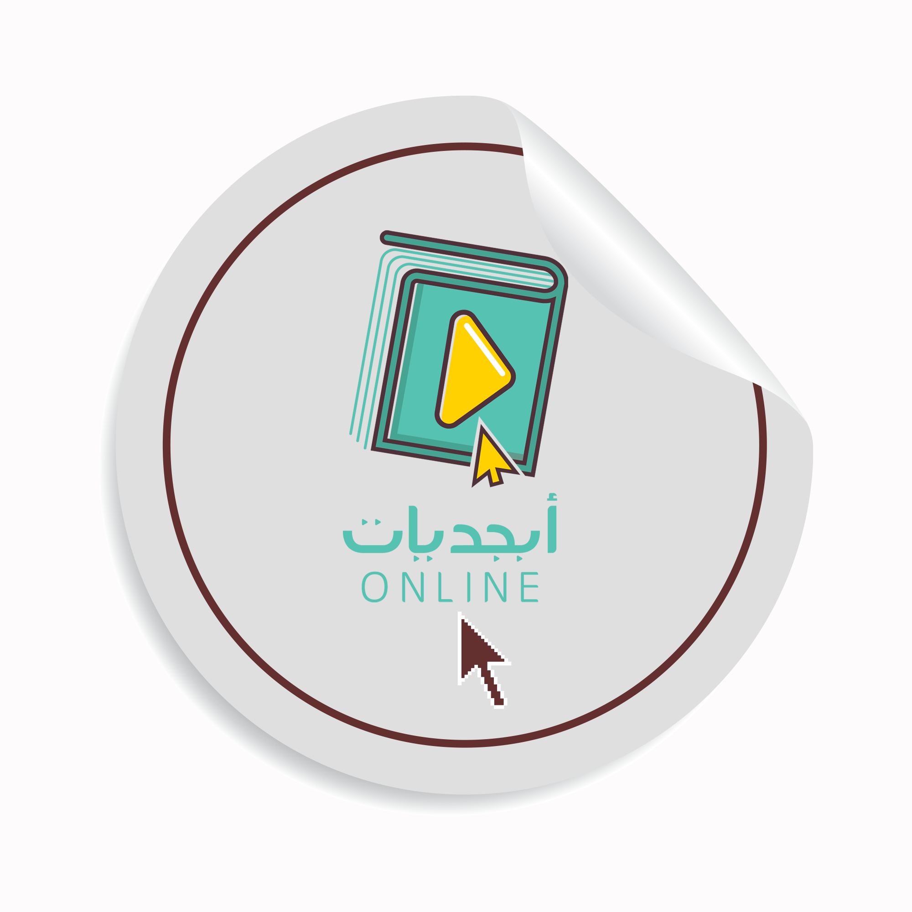

مكانة القلب:
القلب هو أشرف ما في الإنسان، فهو العالم بالله، والعامل له، والمتقرب إليه، أما الجوارح فهي أتباع وخدم له يستخدمها القلب استخدام الملوك للعبيد.
طبيعة القلب والصراع فيه:
القلب بفطرته قابل للهدي، لكنه يميل للشهوة والهوى، وهو ميدان دائم للتدافع بين جند الملائكة وجند الشياطين.
سلاح المواجهة:
ذكر الله تعالى هو السلاح الوحيد لطرْد جند الشيطان، فإذا وقعت الغفلة انبسط الشيطان، وإذا ذُكر الله خنس،.
مداخل الشيطان العظيمة:
- الحسد والحرص: يعميان بصيرة العبد ويجعلانه يرى المنكر حسناً.
- الغضب والشهوة: الغضب غول العقل، وعندما يضعف جند العقل يلعب الشيطان بالإنسان كما يلعب الصبي بالكرة.
- حب التزيين: في المنزل والثياب والأثاث، مما يضيع عمر الإنسان في الانشغال بها،.
- الشبع: فإنه يقوي الشهوة ويثقل العبد عن الطاعات.
- الطمع في الناس والعجلة: فالطمع يؤدي للمداهنة، والعجلة من الشيطان.
- حب المال وسوء الظن بالمسلمين: المال يفسد القلب ويؤدي للبخل، وسوء الظن يدفع لاحتقار الناس والبحث عن عيوبهم،.
أقسام القلوب في الثبات:
- قلب معمور بالتقوى: تنكشف له خواطر الخير من خزائن الغيب.
- قلب مخذول: مشحون بالهوى والخبائث، فيسودّ ويظلم، ولا تؤثر فيه المواعظ،.
- قلب متردد: تتجاذبه خواطر الخير (الملَك) وخواطر الشر (الشيطان)، والعبرة فيه بما يغلب عليه،.
حقيقة الخلق:
هو هيئة في النفس راسخة تصدر عنها الأفعال بسهولة ويسر؛ فإن كانت الأفعال جميلة سمي خلقاً حسناً، وإن كانت قبيحة سمي خلقاً سيئاً،.
إمكانية تغيير الخلق:
الأخلاق تقبل التغيير بالرياضة والمجاهدة، ولو كانت لا تتغير لما كان للمواعظ والوصايا معنى.
الهدف من الرياضة:
ليس قمع الشهوات بالكلية، بل ردها إلى الاعتدال (الوسط بين الإسراف والتقتير)، فالغضب مطلوب للجهاد، والشهوة مطلوبة لبقاء النسل،،.
طرق معرفة عيوب النفس:
- الجلوس بين يدي شيخ بصير بعيوب النفس.
- اتخاذ صديق صدوق بصير متدين ينبه على المكروه من الأخلاق.
- الاستفادة من ألسنة الأعداء؛ فعدو مشاجر يذكر عيوبك أنفع من صديق يداهنك.
- مخالطة الناس، فكل ما تراه مذموماً فيهم تجتنبه في نفسك.
تربية الصبيان:
الصبي أمانة، وقلبه جوهرة ساذجة قابلة لكل نقش. يجب تعويده على خشونة المأكل والمفرش، ومنعه من الفخر على أقرانه، وتعليمه القرآن وأحاديث الأخيار، وتخويفه من الكذب والخيانة،،.
شهوة البطن:
من أعظم المهلكات، وهي أصل شهوة الفرج والطمع في المال.
الاعتدال في الأكل:
يُنصح برفع اليد عن الطعام والعبد ما يزال يشتهيه، فذلك يصح به البدن وتصفو به الفكرة،.
آفات الشبع:
يورث كثرة النوم، وبلادة الذهن، ويجلب الأمراض.
شهوة الفرج:
جعلت لبقاء النسل وليذوق الإنسان لذة يقيس عليها لذات الآخرة، لكنها إذا لم تُرَدّ للاعتدال جرت آفات عظيمة كالعشق والفواحش،.
فضيلة الصمت:
اللسان من أعظم نعم الله لكن خطره كبير، والصمت يجمع الهم ويفرغ الفكر.
أهم الآفات:
- الكلام فيما لا يعني: وهو ضياع لرأس مال العبد وهو عمره.
- الخوض في الباطل: كذكر مجالس الخمر ومعاصي الفساق.
- المراء والجدال: يهدف للترفع وإظهار الفضل، وعلاجه كسر الكبر،.
- الفحش والسب: مصدره الخبث واللؤم، وهو مذموم ومنهي عنه.
- المزاح: منهي عنه إذا كان فيه إفراط أو مداومة، أما اليسير الصادق الذي يطيب النفس فلا بأس به.
- الغيبة: هي ذكر الأخ بما يكره، وهي من الكبائر. علاجها: العلم بأنها تنقل حسناتك إلى من اغتبته، والاشتغال بعيوب نفسك عن عيوب الآخرين.
- الأعذار المرخصة فيها: التظلم، الاستعانة على تغيير المنكر، الاستفتاء، تحذير المسلمين، الملقبون بلقب يعرفون به، والمجاهر بالفسق.
- النميمة: نقل قول إنسان في آخر للإفساد، وهي تمنع من دخول الجنة.
حقيقة الغضب:
شعلة من النار تغلي بها دم القلب لطلب الانتقام،.
علاج الغضب:
- علمياً: تذكر فضائل كظم الغيظ، وتخويف النفس من عقاب الله،.
- عملياً: الاستعاذة، السكوت، وتغيير الحال (الجلوس أو الاضطجاع)، والوضوء،.
الحقد:
هو ثمرة الغضب إذا كُظم لعجز عن التشفي، فيحتقن في الباطن.
الحسد:
كراهة النعمة عند الغير وحب زوالها.
مضرته: يضر الحاسد في دينه (بسخطه على قضاء الله) ودنياه (بألم قلبه وكمده)، بينما ينتفع المحسود بدينياً لأن المظلوم يُعطى من حسنات ظالمه،.
علاجه:
الرضا بالقضاء، والزهد في الدنيا، وإكراه النفس على فعل نقيض ما يأمر به الحسد كالثناء على المحسود والتواضع له،.
إن إصلاح القلب هو مفتاح النجاة، ورياضة النفس تهدف إلى التوسط والاعتدال في كل شيء، واللسان هو الميدان الأكبر للآفات التي يجب الحذر منها بالصمت والذكر. تشبه النفس في علاجها البدن؛ فكما يعالج المرض بضده (الحرارة بالبرودة)، تعالج الرذائل بأضدادها (البخل بالسخاء، والكبر بالتواضع)،.
عن شيخنا ومربينا

فضيلة الشيخ د. محمد الغليظ
هو شيخنا الفاضل، الطبيب الذي داوى القلوب، يتميز بأسلوبه القريب من الشباب ولغته التي تمس الواقع، له قبول واسع وجهود مشهودة في مجال التزكية وإصلاح النفوس. حفظه الله ونفع به.

أكاديمية أبجديات (Abjadiyat)
الصرح التعليمي الذي يشرف عليه الشيخ، لتعليم العلم الشرعي بمنهجية ميسرة وأسلوب عصري يناسب الجميع.
اشترك الآن